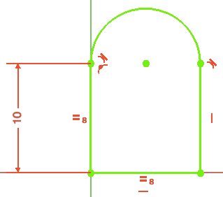
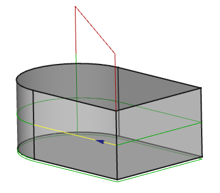

CAM Postprocessor Customization
| This page is incomplete; it was marked as unfinished on the wiki. |
Einführung
FreeCAD verwendet als interne Darstellungen für die erzeugten Pfade so genannte G-Codes. Sie können solche Dinge beschreiben wie: Geschwindigkeit und Vorschübe, Anhalten des Motors usw… Aber das Wichtigste sind die Bewegungen, die sie beschreiben. Diese Bewegungen sind ziemlich einfach: Sie können gerade Linien oder Kreisbögen sein. Anspruchsvollere Kurven wie B-Splines werden bereits von FreeCADs Arbeitsbereich  CAM angenähert.
CAM angenähert.
Was der Postprozessor für dich tun kann
Viele Fräsen verwenden ebenfalls G-Codes zur Steuerung des Fräsprozesses. Sie mögen fast wie die internen Codes aussehen, aber es kann einige Unterschiede geben:
-
Die Maschine kann eine spezielle Startsequenz haben.
-
Sie kann eine spezielle Stoppsequenz haben.
-
Bögen können mit einem relativen oder einem absoluten Mittelpunkt definiert werden.
-
Sie kann Zeilennummern in einem bestimmten Format erfordern.
-
Sie kann so genannte Festzyklen für vordefinierte Unterprozesse wie Bohren verwenden.
-
Vielleicht bevorzugst du die Ausgabe deines G-Codes entweder in metrischen oder zölligen Einheiten.
-
Es könnte nützlich sein, vor dem Aufruf eines Werkzeugwechsels eine Reihe von Bewegungen durchzuführen, um die Aktion für den Bediener zu erleichtern.
-
Vielleicht möchtest du Kommentare zur besseren Lesbarkeit hinzufügen oder sie unterdrücken, um das Programm klein zu halten.
-
Möglicherweise möchtest du eine benutzerdefinierte Kopfzeile einfügen, um das Programm für zukünftige Referenzen zu identifizieren oder zu dokumentieren.
-
…
Darüber hinaus gibt es weitere Sprachen zur Steuerung einer Fräse, wie z.B. HPGL, DXF oder andere.
Der Postprozessor ist ein Programm, das die internen Codes in eine vollständige Datei übersetzt, die auf deine Maschine hochgeladen werden kann.
Vorbereitung zum Schreiben deines eigenen Postprozessors
Du kannst mit einem sehr einfachen Modell beginnen, das zeigt, wie deine Maschine gerade Linien und Bögen liest. Bereite es mit einem beliebigen Programm vor, das für deine Maschine geeignet ist.
Eine Datei für solche Pfade, die bei (0,0,0) beginnen und in Richtung Y gehen, wäre hilfreich. Stelle sicher, dass sich das Werkzeug selbst entlang dieser Bahn bewegt, d.h. es darf keine Werkzeugradiuskompensation angewendet werden.

Der Pfad in FreeCAD würde wie folgt aussehen. Bitte beachte den kleinen blauen Pfeil, er zeigt die Startrichtung an. Für einen allerersten Versuch dürftest du nur eine Ebene in der XY-Ebene angeben.

Du kannst dir dann die Datei anschauen und sie mit der Ausgabe bestehender Postprozessoren wie linux_cnc_post.py oder grbl_post.py vergleichen und selbst versuchen, sie anzupassen; oder lade deine auf das Path/CAM-Forum hoch, um Hilfe zu bekommen.
Namenskonvention
Der Postprozessor kann in FreeCADs Makro-Verzeichnis abgelegt werdn. Für ein Präfix <filename> sollte der Postprozessor den Namen <filename>_post.py erhalten. Bitte beachte, dass die Nachsilbe und die Erweiterung _post.py klein geschrieben werden müssen.
Der neue Name sollte am Anfang der Parser-Argumente-Liste in der Datei <Dateiname>_post.py stehen, z. B.:
parser = argparse.ArgumentParser(prog="grbl", add_help=False)Wenn du testest, leg es in dein Makroverzeichnis. Wenn es gut funktioniert, erwäge bitte, es anderen zur Verfügung zu stellen (poste es im FreeCAD Path/CAM-Forum), damit es in Zukunft in die FreeCAD-Distribution aufgenommen werden kann.
Andere vorhandene Postprozessoren
Zum Vergleich kannst du dir die Postprozessoren ansehen, die mit deiner FreeCAD-Installation geliefert werden. Sie befinden sich in dem Verzeichnis <Pfad_zu_deiner_FreeCAD-Distribution>/Mod/CAM/Path/Post/scripts. Weit verbreitet sind die Postprozessoren linuxcnc und grbl. Ihre Codes zu untersuchen kann hilfreiche Einblicke geben.
Einen eigenen Postprozessor programmieren
In diesem Beitrag werden einige Interna des linuxcnc-Postprozessors diskutiert. Die gleiche Struktur wird auch in anderen Postprozessoren verwendet.
Beim Durchsehen von linuxcnc_post.py, findet man die Export-Funktion (ab 0.19.20514 befindet sie sich in Zeile 156)
def export(objectslist, filename, argstring):
# pylint: disable=global-statement
...
gcode = ""
...
...Sie sammelt Schritt für Schritt die verarbeiteten G-Codes in der Variablen "gcode" und erledigt den Gesamtexport der nachbearbeitbaren Objekte (Operationen, Werkzeuge, Aufträge usw.). Die Exportfunktion erledigt den hochrangigen Kram, wie Kommentare und Kühlmittel, aber alle Objekte, die mehrere CAM-Befehle enthalten (Werkzeugwechsel und Operationen), werden an die Parse-Funktion delegiert (ab 0.19.20514 befindet sie sich in Zeile 288).
def parse(pathobj):
...
out = ""
lastcommand = None
...
...Ähnlich der "Export"-Funktion werden die G-Codes in der Variablen "out" gesammelt geparst. In der Variablen "command" werden die Befehle, wie sie in der Funktion "inspect G-code" des Arbeitsbereichs CAM zu sehen sind, gespeichert und können zur weiteren Bearbeitung untersucht werden.
for c in pathobj.Path.Commands:
command = c.NameEs erkennt die verschiedenen G, M, F, S und andere G-Codes. Indem es sich den letzten Befehl in der Variablen "lastcommand" merkt, kann es nachfolgende Wiederholungen von modalen Befehlen unterdrücken.
Sowohl "parse" als auch "export" dienen lediglich der Formatierung von Zeichenketten und deren Verkettung zu der endgültigen Ausgabe.
Du wirst sehen, dass beide Funktionen auch die Funktion "Zeilennummer()" aufruft. Wenn der Benutzer Zeilennummern wünscht, gibt die Funktion "linenumber" die Zeichenkette zurück, die an der entsprechenden Stelle eingefügt werden soll, andernfalls gibt sie eine leere Zeichenkette zurück, so dass nichts hinzugefügt wird.
Hinzufügen eines benutzerdefinierten Postprozessors
1. Auf den Makro-Pfad zugreifen:
Den Menüpunkt aufrufen. Den im Feld Makropfad-Feld angegebenen Pfad beachten (z. B., /home/user/snap/freecad/common).
2. Die Post-Prozessor-Datei kopieren:
Die Datei (z. B., new_post.py) direkt im Macro Path-Ordner, wie im vorherigen Schritt angemerkt (z. B., /home/user/snap/freecad/common/new_post.py) platzieren.